ICMC-USP
Objetivos do Ganesh
Ganesh é um dos deuses mais venerados do hinduísmo, referido como o "Destruidor de Obstáculos" e o
"Mestre do Intelecto" .
Inspirados por essa divindade e pela crescente importância da Segurança da Informação no contexto da
vida atual, alguns alunos
do ICMC-USP decidiram criar um grupo extracurricular nessa área.
Através do estudo e desenvolvimento de técnicas e algoritmos voltados para a segurança de sistemas e
redes de computadores,
o grupo tem como objetivo proporcionar aos membros uma experiência de aprendizado e troca de
conhecimento facilitada.
Além disso, o grupo também busca integrar e interagir com grupos externos à Universidade, bem como
disseminar suas experiências
e conhecimentos adquiridos junto à comunidade externa por meio de atividades, minicursos e palestras
públicas.
Áreas de Estudo & Pesquisa
Criptografia
Algoritmos matemáticos para garantir o sigilo e a integridade dos dados.
Redes
Análise de tráfego e protocolos para identificar falhas e proteger conexões.
Segurança Web
Identificação e correção de vulnerabilidades em sites, APIs e servidores.
Engenharia Reversa
Desmontagem de binários para entender o funcionamento interno de softwares.
Hardware Hacking
Exploração de circuitos e firmwares para testar a segurança física de dispositivos.
Capture The Flag (CTF)
Participamos ativamente de competições nacionais e internacionais onde colocamos em prática nossos conhecimentos em cenários reais e desafiadores.
#1
Equipe Universitária do Brasil
#2
Melhor Equipe Nacional
Quero me tornar Membro!
O único pré-requisito é participar do nosso Ping (Processo de Ingresso), que ocorre no primeiro semestre.
Origem e apoio
Nossa Universidade
A Universidade de São Paulo (USP), fundada em 1934, é a maior e mais prestigiada universidade pública do Brasil e referência na Ibero-América. Presente em mais de 100 posições globais de reputação, a USP atua no ensino, pesquisa e extensão em todas as áreas do conhecimento. Conta com cerca de 90.000 alunos distribuídos em 11 campi pelo estado de São Paulo, incluindo a capital, São Carlos, Ribeirão Preto e Piracicaba.

Nosso Instituto - ICMC
O Instituto de Ciências Matemáticas e de Computação (ICMC) da USP é referência nacional e internacional nas áreas de Computação, Matemática e Estatística. Localizado no campus de São Carlos, o instituto atua na formação de alunos de graduação e pós-graduação, na geração de conhecimento e na inovação tecnológica para o desenvolvimento científico e social do país.
